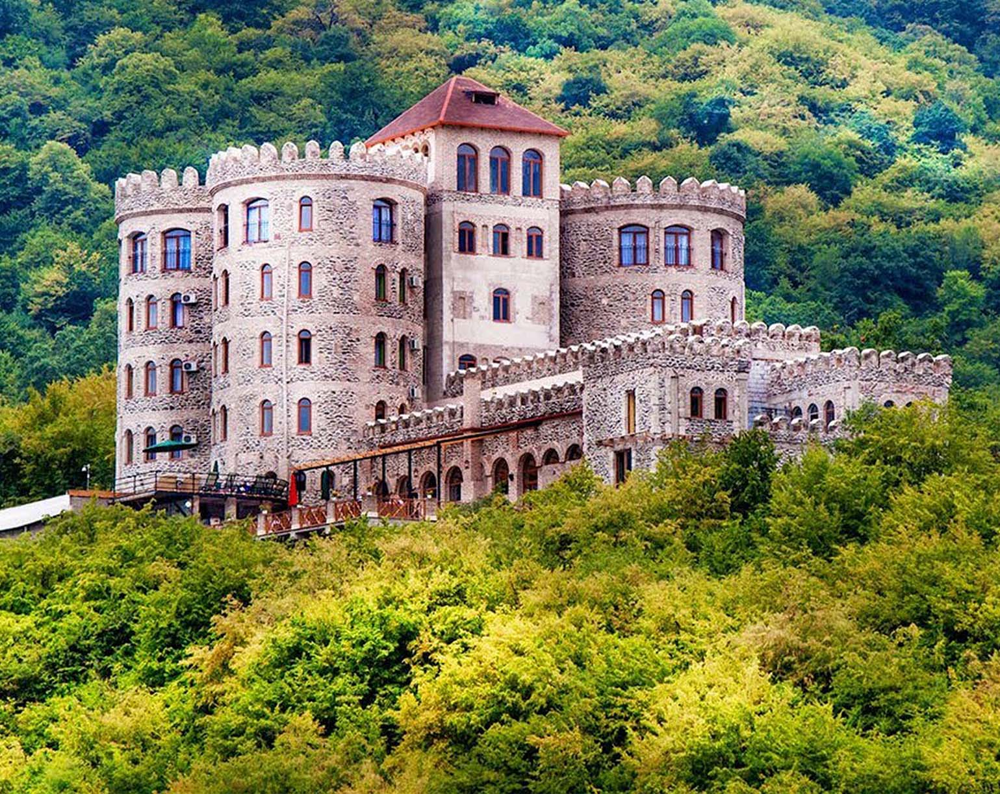
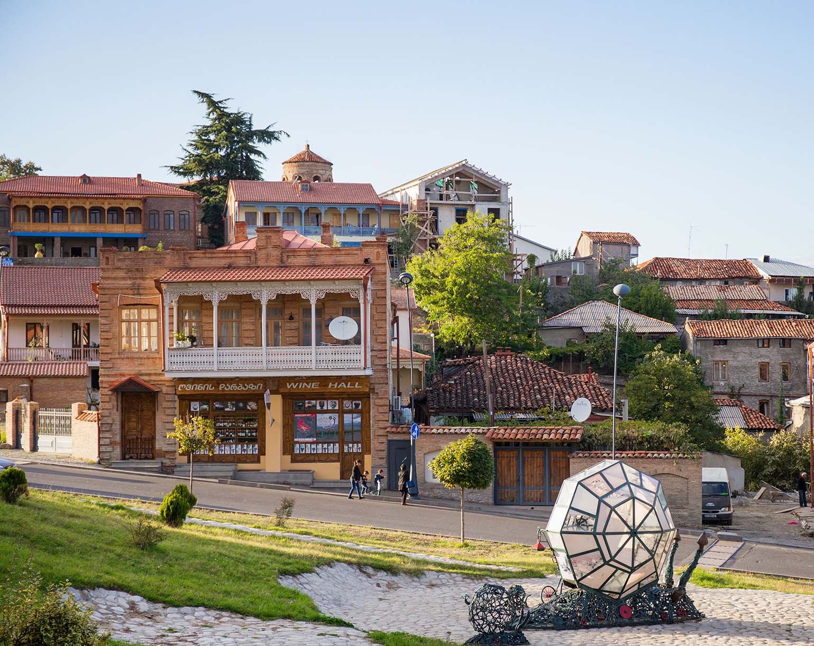

Кахетия
Кахетия (Грузия) по праву считается центром виноделия, здесь находятся главные виноградники и перерабатывающие предприятия. Учитывая данную особенность региона, лучшее время для посещения Кахетия – осень, поскольку именно осенью здесь царит особая, праздничная атмосфера, некоторые винные заводы предлагают туристам принять участие в сборе урожая. Если вы планируете посетить Кахетию в другое время года, вас ждет увлекательное путешествие по древним знаменитостям и живописным заповедникам.
На территории Восточной Грузии это самый богатый район. Расположен Кахетинский регион в 50 км от столицы в северо-восточном направлении (по трассе 85 км), здесь проживает чуть больше 318 тысяч человек. Столица Кахетии – город Телави. Исторические события, происходившие в Кахетинском крае, неразрывно связаны с формированием и становлением грузинских государств. Кахетия, как самостоятельное княжество, образовалось в 8 веке и вплоть до 11 столетия развивалось самостоятельно. Затем Кахетия присоединилась к Грузии.
Климат большей части Кахетии субтропический. Алазанская долина имеет климат схожий с климатом южного подножия Итальянских Альп. Средняя температура января здесь около 1 °С, в июле — 23—24 °С. Количество осадков уменьшается с северо-запада на юго-восток, в районе Ахмета их годовое количество более 900 мм, в районе Греми — 700 мм, восточнее Гурджаани — менее 600 мм. Алазанская долина и северные склоны Гомборского хребта очень благоприятны для выращивания винограда — именно здесь расположен главный винный центр Грузии. На Иорском плоскогорье сухой степной климат, с умеренно холодной зимой и жарким летом. Средние температуры июля около 25 °С, января — около 0 °С. В Ширакской степи и других котловинах Иорского плоскогорья зима бывает ещё более суровой — средняя температура января около −3 °С, а количество осадков менее 500 мм в год. На крайнем юго-западе Кахетии, в районе монастыря Давид-Гареджа, климат полупустынный с годовым количеством осадков менее 400 мм в год. Иорское плоскогорье — житница Грузии, здесь основной сельскохозяйственной культурой является пшеница. Обширная часть плоскогорья используется под зимнее пастбище.
Современный край Кахетия расположен на территории трёх грузинских исторических областей Кахети, Кухети и Гардабани. Согласно летописи «Картлис Цховреба» у этнарха всех грузин Картлоса было пять детей, среди которых Кахет, Кухет и Гардабан.
Среди восьми эриставств, основанных царём Фарнавазом (III век д.н. эры) было и Кахетинское эриставство. Столицей объединённого эриставства стал город-крепость Уджарма, основанный царём Асфагуром.
В раннем средневековье центр Кахетии переместился в глубину Иорской долины, севернее, в город Греми, а позже в город Телави. После распада единого Грузинского государства, с XI века и до объединения Картли и Кахетии в Кахетии стал править собственный царь.